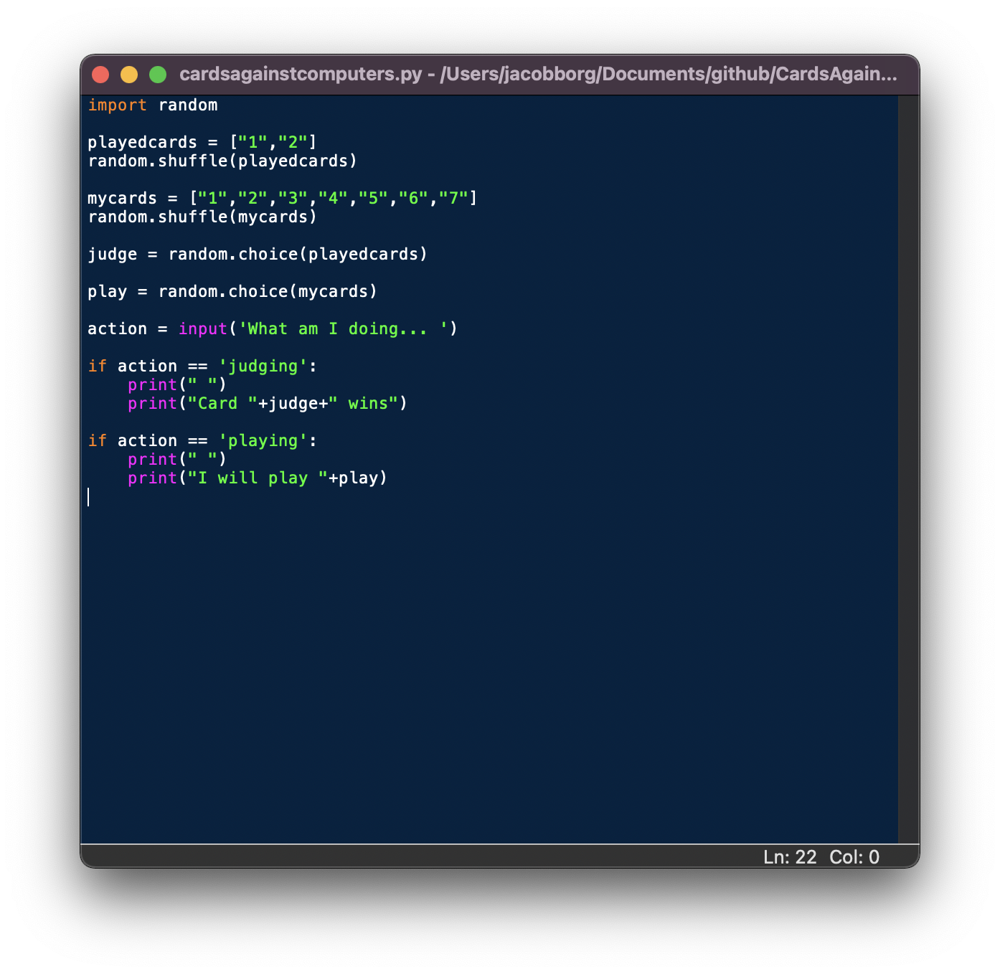

Required Software:
IDLE and Python Launcher
These can be downloaded on the Python website
How to setup the script:
First of all, you will need to decide the number of players (Humans + computers) and input that into the Python script and then save it.

EXAMPLE: If you have 5 players, the “playedcards” library should read:
playedcards = [“1”,”2","3","4","5"]
How to play:
Open the “cardsagainstcomputers.py” script with IDLE and then hit the “F5” key (You may need to push or hold the “FN” or “Function” key first). This will auto run the script.
Once the script is running, the console will print:
What am I doing...
The dealer will then type in either “judging”, “playing”, “playing2”, or “playing3”. (Depends on the number of cards the computer needs to pick)
The computer will then select a card (Or cards). The computer selects cards left-to-right looking out from its screen.
If the computer is selecting multiple, the dealer will need to remove a card then type in “next” for the computer to make its next selection.
At the beginning of every computer turn, the dealer will need to run this script.
Functions:
Judging:
This function will allow the computer to select a player that wins (It is essentially random at this type).
playing:
This will randomly select one of the seven cards dealt to the computer.
playing2:
This will randomly select two cards from the computer’s hand.
playing3:
This will randomly select three cards from the computer’s hand.
You can also view a PDF version of this guide!